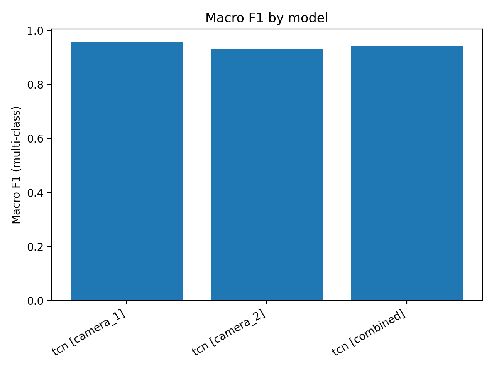
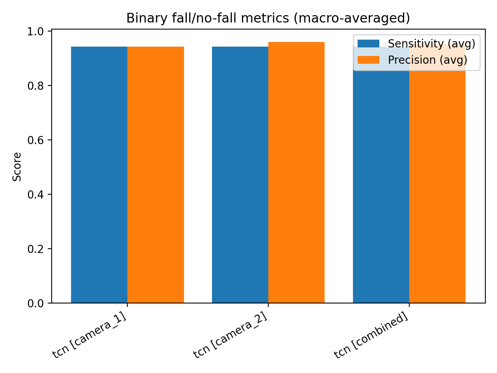
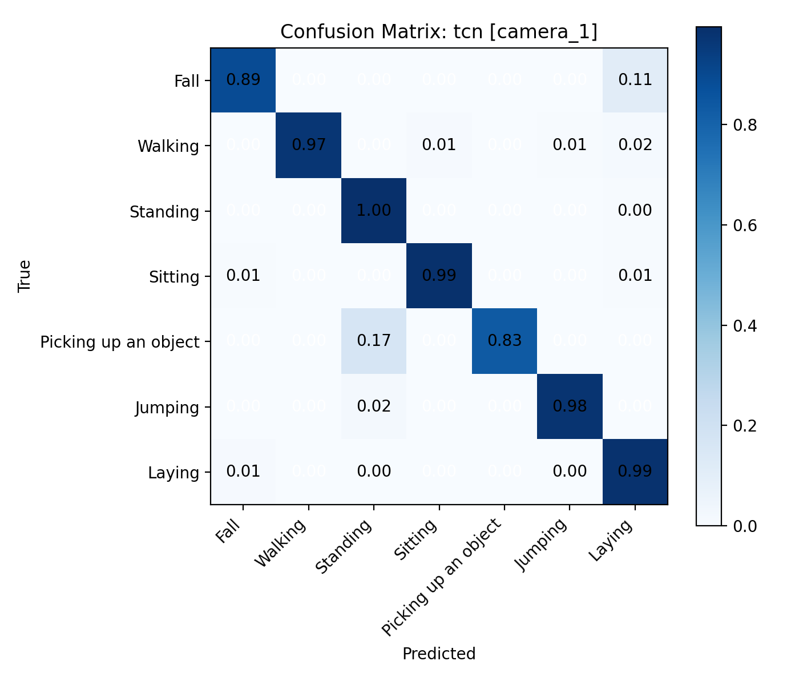
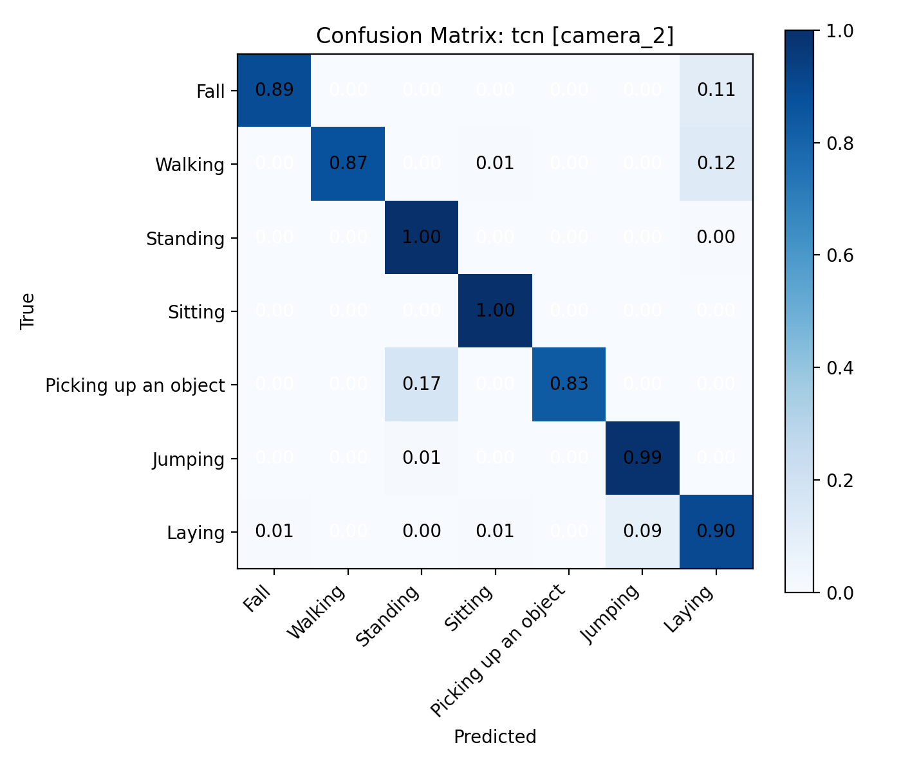

Binary fall/no-fall metrics are computed by collapsing multi-class labels using the provided fall class ids, then macro-averaging precision and sensitivity over the two binary classes.
| model | eval_split | n_samples | params_m | macro_f1 | binary_mode | p_fall_source | threshold | beta | tune_subjects | tuned_threshold | tuned_precision_fall | tuned_recall_fall | tuned_fbeta | binary_precision_avg | binary_sensitivity_avg | binary_precision_fall | binary_sensitivity_fall | binary_precision_no_fall | binary_sensitivity_no_fall | binary_f1_avg | binary_f1_fall | binary_f1_no_fall | weights | camera | subjects | frame_step | window_T_raw | window_stride_raw | window_T_sampled | window_stride_sampled | normalize_mode | missing_mode | interp_mode | interp_group | rp_center_mode | rp_img_w | rp_img_h | feature_mode | motion_xy_scale |
|---|---|---|---|---|---|---|---|---|---|---|---|---|---|---|---|---|---|---|---|---|---|---|---|---|---|---|---|---|---|---|---|---|---|---|---|---|---|---|---|
| tcn | camera_1 | 1079 | 0.421639 | 0.957890 | threshold | activity_softmax | 0.5 | 2.0 | None | None | None | None | None | 0.943019 | 0.943019 | 0.888889 | 0.888889 | 0.997148 | 0.997148 | 0.943019 | 0.888889 | 0.997148 | models/tcn/2026-03-04_18-11-40_266918/tcn_best.pt | 1 | 16,17 | 1 | 64 | 32 | 64 | 32 | paper_rp | zeros_only | paper_group_linear | 100 | pixel | 640 | 480 | full | 0.25 |
| tcn | camera_2 | 1079 | 0.421639 | 0.929231 | threshold | activity_softmax | 0.5 | 2.0 | None | None | None | None | None | 0.960114 | 0.943494 | 0.923077 | 0.888889 | 0.997151 | 0.998099 | 0.951643 | 0.905660 | 0.997625 | models/tcn/2026-03-04_18-11-40_266918/tcn_best.pt | 2 | 16,17 | 1 | 64 | 32 | 64 | 32 | paper_rp | zeros_only | paper_group_linear | 100 | pixel | 640 | 480 | full | 0.25 |
| tcn | combined | 2158 | 0.421639 | 0.943118 | threshold | activity_softmax | 0.5 | 2.0 | None | None | None | None | None | 0.951405 | 0.943256 | 0.905660 | 0.888889 | 0.997150 | 0.997624 | 0.947291 | 0.897196 | 0.997387 | models/tcn/2026-03-04_18-11-40_266918/tcn_best.pt | 1,2 | 16,17 | 1 | 64 | 32 | 64 | 32 | paper_rp | zeros_only | paper_group_linear | 100 | pixel | 640 | 480 | full | 0.25 |
Values are percentages. Precision/recall/specificity/F1 are macro-averaged over classes present in this split.
| model | eval_split | camera | n_samples | accuracy | recall | specificity | precision | f1_score |
|---|---|---|---|---|---|---|---|---|
| tcn | camera_1 | 1 | 1079 | 98.146 | 94.879 | 99.663 | 96.932 | 95.789 |
| tcn | camera_2 | 2 | 1079 | 93.976 | 92.556 | 98.910 | 94.033 | 92.923 |
| tcn | combined | 1,2 | 2158 | 96.061 | 93.718 | 99.286 | 95.286 | 94.312 |


| model | eval_split | class_id | class_name | f1 |
|---|---|---|---|---|
| tcn | camera_1 | 0 | Fall | 0.872727 |
| tcn | camera_1 | 1 | Walking | 0.984293 |
| tcn | camera_1 | 2 | Standing | 0.988558 |
| tcn | camera_1 | 3 | Sitting | 0.989744 |
| tcn | camera_1 | 4 | Picking up an object | 0.909091 |
| tcn | camera_1 | 5 | Jumping | 0.979798 |
| tcn | camera_1 | 6 | Laying | 0.981022 |
| tcn | camera_2 | 0 | Fall | 0.905660 |
| tcn | camera_2 | 1 | Walking | 0.931129 |
| tcn | camera_2 | 2 | Standing | 0.990826 |
| tcn | camera_2 | 3 | Sitting | 0.992366 |
| tcn | camera_2 | 4 | Picking up an object | 0.909091 |
| tcn | camera_2 | 5 | Jumping | 0.867257 |
| tcn | camera_2 | 6 | Laying | 0.908284 |
| tcn | combined | 0 | Fall | 0.888889 |
| tcn | combined | 1 | Walking | 0.958389 |
| tcn | combined | 2 | Standing | 0.989691 |
| tcn | combined | 3 | Sitting | 0.991060 |
| tcn | combined | 4 | Picking up an object | 0.909091 |
| tcn | combined | 5 | Jumping | 0.919811 |
| tcn | combined | 6 | Laying | 0.944893 |
Rows are true labels, columns are predicted labels. Labels follow the merged 7-class scheme.


Generated by models.eval_models.